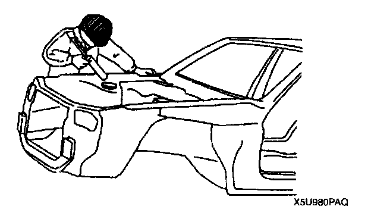
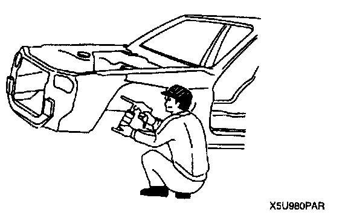
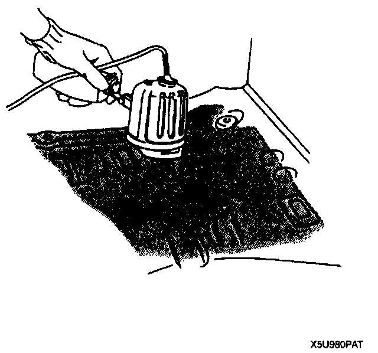

Anticorrosion, Sound Insulation, and Vibration Insulation
ANTICORROSION, SOUND INSULATION, AND VIBRATION INSULATIONBody Sealing

- Apply body sealer where necessary.
- For locations where application of body sealer is difficult after installation, apply it before installation.
Application of Undercoating

- Apply an undercoat to the required location of the body.
Application of Rust Inhibitor

- Apply rust inhibitor (wax, oil, etc.) to the back of the welded areas.
Application of Silencer Floor

- Apply silencer floor heating by using an infrared ray lamp.